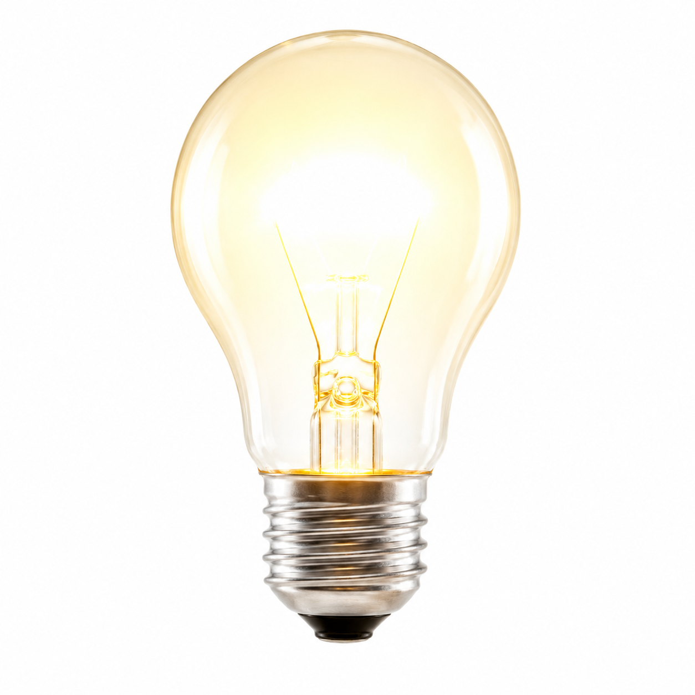
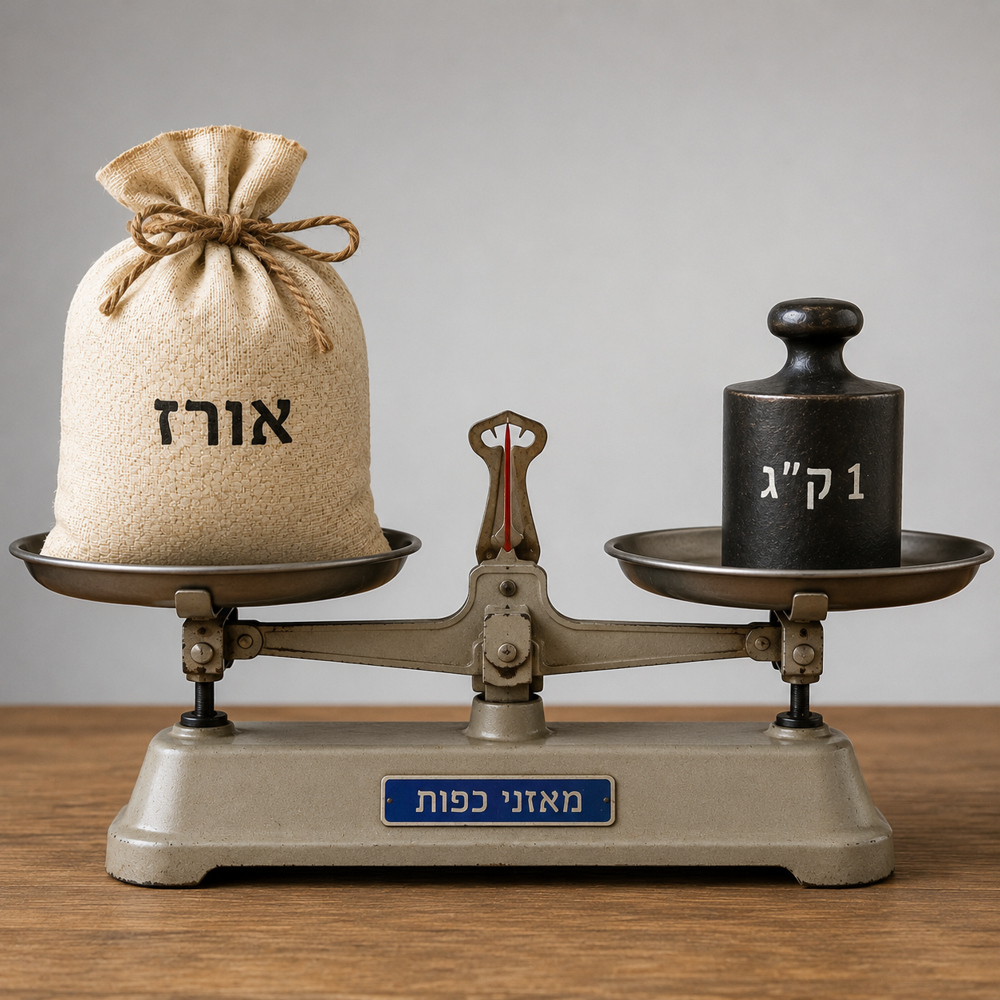

מסה, משקל וההבדלים ביניהם
בואו נלמד על זה!
אחד מהמשפטים הבאים אינו נכון מדעית, מהו?
לחצו על הדמות


המשפט שחן אמרה - "שקלתי את הטלפון הנייד שלי. הוא שוקל 174 גרם בדיוק",
נשמע טבעי לגמרי בשפה היומיומית, אבל מבחינה מדעית הוא לא מדויק.
צריך לומר: "המסה של הנייד שלי היא 174 גרם".
תרצו לדעת למה? ומה ההבדל בין משקל למסה? זה מה שנלמד ביחידה הזו!
מסה, משקל וההבדלים ביניהם
איך תרצו ללמוד?
מסה, משקל וההבדלים ביניהם
קראו בריכוז מהי מסה ומהו משקל (לחצו על + לפתיחה):
מסה היא כמות החומר בגוף כלשהו (למשל, אדם, אבן, חיה, או חפץ).
מיליגרם (מ"ג): לחפצים קלים מאוד, כמו נוצה.
גרם (ג'): לחפצים קלים, כמו טלפון נייד או עיפרון.
קילוגרם (ק"ג): לחפצים כבדים יותר, כמו תיק או בן אדם.
טון: לחפצים כבדים מאוד, כמו מכונית או מטוס.
משקל הוא הכוח שהכבידה מפעילה על גוף בעל מסה.
בכל גרם שמימי (כמו כדור הארץ, הירח, או כל כוכב אחר) קיים כוח כבידה אחר שמשפיע על הגופים בקרבתו.
ככל שכוח הכבידה חזק יותר, המשקל של הגוף באותו גרם שמיים יהיה גדול יותר, ולהפך.
למשל, אדם שנמצא על כדור הארץ, בו כוח הכבידה הוא חזק יחסית למקומות אחרים בחלל, משקלו יהיה רב יותר, לעומת מצב בו יעמוד על הירח, בו כוח הכבידה חלש פי 6. זו הסיבה שבירח נרגיש קלים יותר.
בשפה היומיומית אנחנו רגילים לדבר בקילוגרמים ובגרמים כשמתארים משקל, אבל בשפה המדעית זה לא מדויק, כי אלו יחידות שמתארות מסה.
משקל נמדד ביחידות הנקראות ניוטון (N), על שם המדען אייזק ניוטון שגילה את חוק הכבידה.
בחיי היומיום אנחנו לא רגילים לשמוע "אני שוקל 784 ניוטון", אבל זה המינוח המדעי המדויק.
אסטרונאוט מתכונן לטיסה לירח.
לחצו על התמונה כדי לגלות מהם המסה והמשקל שלו על כדור הארץ.
משקל: מסה כפול עוצמת כוח הכבידה בכדור הארץ.
האסטרונאוט שוגר לירח.
לחצו על התמונה כדי לגלות מהם המסה והמשקל שלו על הירח.

משקל: מסה כפול עוצמת כוח הכבידה בירח (קטנה מכדור הארץ).
האסטרונאוט מתכונן לטיסה לירח
משקל: מסה כפול עוצמת כוח הכבידה בכדור הארץ.
משקל: מסה כפול עוצמת כוח הכבידה בכדור הארץ.
משקל: מסה כפול עוצמת כוח הכבידה בירח (קטנה מכדור הארץ).
האם קיים הבדל במסה ובמשקל של האסטרונאוט
על כדור הארץ, לעומת על הירח?

חשוב לזכור - ההבדל העיקרי בין מסה למשקל:
מסה
מסה של גוף לא תשתנה, גם אם נעביר את הגוף למקום בעל כוח כבידה אחר.
מדוע? כי כמות החומר ממנה מורכב לא "נעלמת" ולא "מתווספת".
משקל
משקל כן משתנה לפי כוח הכבידה במקום בו הגוף נמצא.
במקום בו כוח הכבידה חזק יותר, המשקל של אותו גוף יהיה גדול יותר, ולהפך.
2 סוגי מאזניים – איך כוח הכבידה משפיע עליהם?

מאזני כפות
אז מה היה לנו?
מיינו את המשפטים למקום המתאים, ותקבלו טבלה שמסכמת את ההבדלים העיקריים בין מסה למשקל.
מה נשאר לנו בראש?
שתי שאלות חימום קלילות לפני שנתקדם
בחרו עבור כל הגדרה את המושג המתאים לה.
התרכזו, יש רק ניסיון אחד.
הכוח שהכבידה מפעילה על גוף, משתנה כתלות בכוח הכבידה.
כמות החומר בגוף. זהה בכל מקום, נמדד במיליגרם, גרם, קילוגרם וטון.
הירח
מה קורה למסה של אסטרונאוט כשהוא עובר מכדור הארץ לירח?
נעבור לתרגול הראשון ונענה על
6 שאלות
צריך לענות נכון על 4 שאלות (80%) לפחות.
ליאורה האסטרונאוטית מבלה בריחוף באזור רחוק מאוד בחלל, שבו כוח הכבידה קטן מאוד.
איזה מהמשפטים מתאר בצורה המדויקת ביותר את מה שקורה לליאורה?

שקד וים קראו שכוח הכבידה על כוכב צדק חזק פי כ־2.5 מזה שעל כדור הארץ.
שקד: ״אם אגיע לכוכב צדק, מסתי תהיה פי 2.5״.
ים: ״לא נכון. המסה שלך תישאר כמו שהיא. מה שיגדל פי 2.5 הוא המשקל שלך.״
מי צודק מבחינה מדעית?

מדדתם את מסתו של קילו אורז בעזרת מאזני כפות ומשקולת של 1 ק"ג.
המאזניים התאזנו.
כעת לקחתם את אותם המאזניים, את האורז ואת המשקולת אל הירח.
מה יקרה על הירח?
בחרו עבור כל מילה אם היא מייצגת שפה מדעית, שפה יומיומית, או גם וגם.
בשיעור מדעים צפו התלמידות והתלמידים בסרטון של
ניל ארמסטרונג – האדם הראשון שצעד על הירח – מקפץ על הירח.
בחרו עבור כל משפט, האם הוא תצפית (מה שרואים) או הסבר מדעי (הסבר של תופעה).
1969: ניל ארמסטרונג נוחת על הירח
שנת 1589. גלילאו גליליי, פרופסור צעיר באוניברסיטת פיזה,
מחליט לאתגר רעיון שנחשב אמת מוחלטת עד אז.
אריסטו טען שגוף עם מסה כבדה יפול מהר יותר מגוף עם מסה נמוכה.
כולם האמינו לזה, אף אחד לא טרח לבדוק.
גלילאו החליט לבדוק אם זה נכון.
הוא עלה למגדל פיזה, החזיק שני כדורים -אחד מברזל ואחד מעץ -
ושחרר אותם יחד לקרקע.
התוצאה: שניהם נחתו בו-זמנית.

האם הניסוי הזה באמת קרה?
ההיסטוריונים לא בטוחים בכך.
המקור היחיד הוא ביוגרפיה שכתב תלמידו של גלילאו שפורסמה כ-75 שנה
אחרי מות גלילאו.
ייתכן שמדובר בניסוי מחשבתי שהפך לאגדה.
ב-1971 בדק האסטרונאוט דייוויד סקוט את הרעיון מחדש, על הירח.
הוא שחרר פטיש ונוצה בו-זמנית.
התוצאה: גם בירח, שני הגופים נגעו בקרקע יחד.
מה ניתן להסיק מתוצאת הניסוי?
אין כמו תרגול לחיזוק הלמידה
3 שאלות
וכבר בהתחלה יש רמז! ענו נכון על כל השאלות כדי להתקדם.
כשאסטרונאוט נמצא פעם אחת על כדור הארץ, ופעם אחרת על הירח – מה השתנה?
התאימו בין המשפט למושג המתאים לו:
איזה מהמשפטים הבאים הוא תצפית?
יופי של עבודה!
הנה עוד שאלה אחת ברמת קושי גבוהה יותר.
ברור לי שתצליחו!
נועה כתבה ביומן המדע: "אני חושבת שכוח הכבידה
הפועל על גוף קטן ככל שמתרחקים מגרם שמיימי".מה הופך את המשפט הזה להשערה מדעית?
שחזור הניסוי של גלילאו:
בהתנסות הזו תשחזרו ותרחיבו את הניסוי של גלילאו. גלילאו זרק שני חפצים בעלי
מסה שונה, שהגיעו באותו זמן לקרקע.
וכאן - תתנסו בזריקת 2 חפצים בעלי מסה זהה, אך שונים בצורתם.
האם גם הם יגיעו באותו זמן לקרקע?
התנסו בעצמכם, ובדקו (כאן, משמאל ).
תוצאות זמני הנחיתה הן לצורך המחשה בלבד.